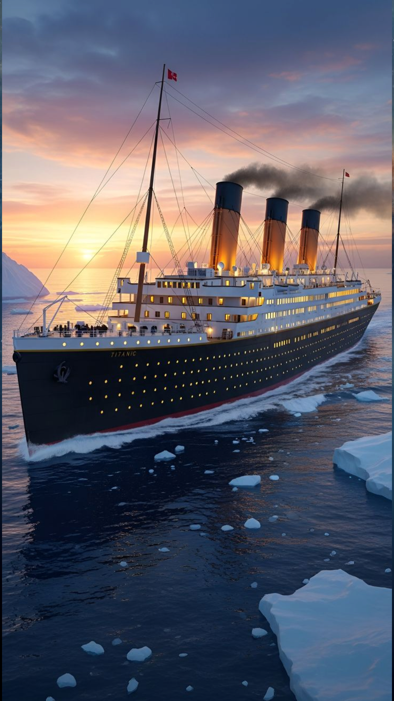
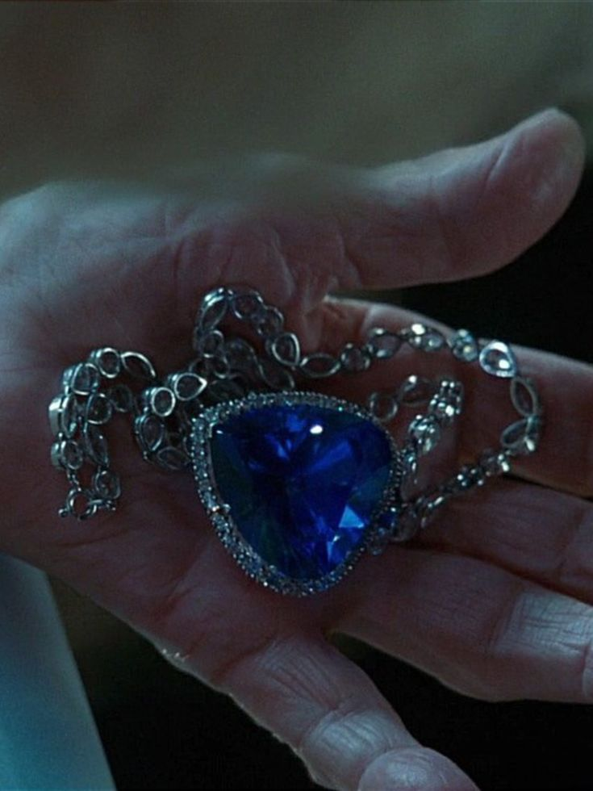

The Ship
Forty-six thousand tons of steel — and every light burning.
White Star Line · April 1912
T I T A N I C
“Nothing on Earth could come between them.”
The gangway at berth 44. Steam, brass bands, and the largest moving object ever made by man.

Forty-six thousand tons of steel — and every light burning.
“Winning that ticket was the best thing that ever happened to me.”
Trunks of silk and letters for a new world — or everything owned, in a single kit bag.
Oak and wrought iron beneath a dome of glass — six storeys of morning light.
The ocean is calm now.
“A woman's heart is a deep ocean of secrets.”

Cal's engagement gift to Rose was a deep blue diamond cut for a king — worth more, he said, than the ship that carried it. She was wearing it the night Jack drew her; she found it in the pocket of his coat on the deck of the Carpathia, and told no one for eighty-four years.
In 1985, seventy-three years after the sinking, Robert Ballard's cameras found the real Titanic standing upright in the dark, two and a half miles down — bow dignified, stern in ruin. In the film, an old woman sails out to the discovery, walks to the rail one last night, and lets the diamond fall — back to the ship, back to him.
The sea keeps her secrets gently.
Titanic
a love story
Starring
Jack Dawsona dreamer from Chippewa Falls
Rose DeWitt Bukatera soul set free
Featuring
R.M.S. Titanicthe ship of dreams
The North Atlanticvast, patient, unknowable
Set in
April 1912Southampton to the sea
Crafted with
Cormorant Garamond & Josttypography
GSAP ScrollTriggermotion & the scroll film
Canvassea, fog, stars and gold dust
In memory of the 1,517 who did not reach the morning.
A personal tribute inspired by the 1997 film. Stills © their rightful owners. Not for publication or profit.
fin